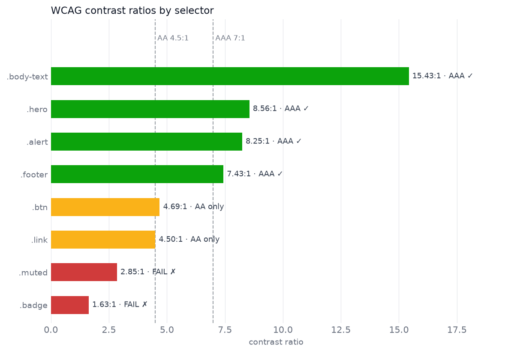

Most people who use Claude Code — Anthropic’s coding agent, driven from a terminal — end up with a .claude/commands/ directory. Inside it sit markdown files you wrote yourself: a canned prompt for opening a pull request, one for the release checklist you keep half-remembering, one for the way this repo wants a commit message. Each file name becomes a slash command, so deploy.md gives you /deploy, and typing it pastes the file’s contents into the conversation. It is the cheapest automation in the tool: one file, one name, no configuration.
The ground has shifted under those files. Custom commands have been merged into skills, a format that keeps the same idea — a prompt you wrote, stored in the repo, summoned by name — and gives it a directory instead of a single file, plus a block of settings at the top saying who is allowed to summon it. A file at .claude/commands/deploy.md and a skill at .claude/skills/deploy/SKILL.md both produce /deploy and behave identically when you type it.
Nothing breaks. Existing command files keep working, and the commands reference now simply points at skills as the way to add your own. What changed is everything you get on top of the /name interface: somewhere to put supporting files, frontmatter controlling who may invoke the skill, and — the change that matters most — Claude loading your prompt on its own when the conversation calls for it, without you typing anything.
That last one is where the two formats stop being the same thing wearing different filenames.
A skill has two doors; a command had one
A slash command had exactly one entry point: you typed it. A skill has two, and the second is what the old format could not do at all.
Directly, slash-command style. Type /skill-name plus any arguments. Arguments land in the skill body via $ARGUMENTS (the whole argument string), $ARGUMENTS[N] or its shorthand $N for positional access (0-based, so $0 is the first argument), or named placeholders declared in the frontmatter arguments field — arguments: [file, format] makes $file and $format expand to the first and second arguments.
Implicitly, by asking in plain language. Claude Code keeps every skill’s description loaded in context. When your request matches one, Claude invokes the skill itself — no slash, no command name, you may not even know the skill exists. This is the piece commands never had, and it’s driven entirely by the description field.
Same skill, both doors:
# Direct: you point at it
/contrast-audit styles/main.css
# Implicit: you describe the need
Is the button text readable
against that new background color?
The left invocation substitutes styles/main.css into the skill body and runs it. The right one works because the skill’s description says it audits CSS color contrast — Claude matches your phrasing against that description and invokes the skill on its own, with the arguments inferred from what you were talking about.
A second door only helps if there is a room worth entering, though, and the room is bigger than a command’s was.
A skill is a directory, and that is the whole point
A command was one markdown file, so everything it knew had to fit in that file and be read every time. A skill is a directory with SKILL.md as its required entrypoint, and the other files in that directory are the reason the format exists at all.
my-skill/
├── SKILL.md # required: YAML frontmatter + markdown instructions
├── reference.md # optional: detailed docs, loaded only when needed
├── examples.md # optional: sample outputs showing expected format
├── template.md # optional: fill-in-the-blank templates
└── scripts/
└── helper.py # optional: executable — run, never loaded into context
SKILL.md itself has two parts doing two different jobs:
YAML frontmatter — metadata Claude uses to decide when to use the skill. Only the description is loaded into context up front.
Markdown body — the actual instructions. When the skill is invoked, the rendered body is inserted into the conversation as a message and stays there for the rest of the session. There is no magic: a skill is a prompt, injected on demand.
The split matters because of what it costs to know something. Everything Claude has in front of it competes for room in a finite context window, so a single-file command pays full price for every word it contains, every time it runs. reference.md and its siblings cost nothing until Claude decides it needs them, and scripts are executed rather than read, so their contents never enter the window at all. The body can also fetch live data before Claude sees any of it: a line like !`git diff HEAD` runs at invocation time and splices its output into the rendered prompt (dynamic context injection).
Where the directory lives decides who gets the skill. There are four homes — enterprise (managed settings), personal (~/.claude/skills/), project (.claude/skills/), and plugins — and in each case the directory name becomes the command name.
The frontmatter is where you decide who may invoke it
The settings block at the top of SKILL.md is small but it is where the interesting decisions live, because most of the fields are about permission and timing rather than behavior: who may fire this skill, with which tools, on which files, and whether it runs in your conversation or off to one side.
All fields are optional. description is the only recommended one, because it’s what drives automatic invocation: Claude matches your phrasing against it, so write it as “what this does + when to use it,” keywords a user would actually say. (The combined description + when_to_use text is truncated at 1,536 characters in the skill listing, so front-load the key use case.)
Field
What it does
name
Display name in skill listings. Defaults to the directory name (which is what names the /command for personal and project skills).
description
What the skill does and when to use it. Drives Claude’s decision to auto-invoke. Falls back to the body’s first paragraph if omitted.
when_to_use
Extra trigger context (phrasings, example requests). Appended to description in the listing.
argument-hint
Autocomplete hint for expected arguments, e.g. [css-file].
arguments
Names for positional arguments, enabling $name substitution in the body.
disable-model-invocation
true = only you can invoke it. Use for side-effectful workflows (/deploy, /commit) where Claude shouldn’t decide the timing. Also removes the description from context.
user-invocable
false = hidden from the / menu; only Claude can invoke it. For background knowledge that isn’t a meaningful user action.
allowed-tools
Tools Claude may use without a permission prompt during the turn that invokes the skill. The grant clears on your next message.
disallowed-tools
Tools removed from Claude’s pool while the skill is active.
model
Model override while the skill runs (rest of the current turn).
effort
Effort-level override (low … max) while the skill is active.
context
fork = run the skill in an isolated subagent instead of inline. See next section.
agent
Which subagent type executes a context: fork skill (default general-purpose).
background
With context: fork: false waits for the result in the invoking turn instead of running in the background (default true).
hooks
Hooks scoped to this skill’s lifecycle.
paths
Glob patterns; the skill only auto-activates when Claude is working with matching files.
shell
bash (default) or powershell for !`command` dynamic-context lines.
A cookbook explains why the pieces are split up this way
That is a lot of fields for what is, after all, a prompt in a folder. The arrangement makes more sense if you stop thinking of it as configuration and think of it as a cookbook — a thing designed around the fact that a cook cannot hold every recipe in their head at once, which is exactly the constraint a context window imposes.
The name and description are the recipe card in the index: what dish this makes, and when you’d want it. The cook (Claude) skims the index constantly; it’s the only part always in memory.
The SKILL.md body is the method — the actual numbered steps, read only when the dish is being made.
The supporting files are the pre-made ingredients and specialty tools in the drawer: the stock in the freezer (reference.md), the plating photo (examples.md), the pasta machine (scripts/). They sit unused — costing nothing — until the recipe calls for them. This is what keeps the cookbook itself thin.
Invoking directly (/skill-name) is pointing at the card and saying “make this one.” Natural-language invocation is telling the cook what you’re in the mood for and letting them pick the right recipe.
Old-style commands were recipe cards with the entire method crammed onto the card, and a cook who never opened the box unless you handed them a specific card. Skills give the cook an index and a drawer.
The analogy has one limit worth naming before it misleads you: the cook is still the same cook. A recipe does not hire a second chef, and by default neither does a skill.
A skill is instructions; a subagent is a second worker
Those two get conflated constantly, and the confusion is expensive, because it leads people to expect isolation they are not getting.
A skill (by default) is not an actor. Invoking it loads its instructions inline into the current conversation — reference material or a procedure handed to the same Claude that’s already talking to you. It shares your context, sees your history, and its content persists in the session after it runs.
A subagent is a separate actor. It has its own system prompt, its own tool access and permissions, and its own isolated context window. It doesn’t see your conversation history; it receives a task, works alone, and returns a summary.
The bridge between them is context: fork. Add it to a skill’s frontmatter and the skill body becomes the prompt driving a subagent rather than an insert into your conversation — the agent field picks which subagent type executes it, and by default it runs in the background while you keep working. That’s opt-in, and it only makes sense for skills that contain an actual task (“audit X, report Y”) — forking a pile of style guidelines gives the subagent no instructions to act on.
The same machinery composes in the reverse direction too: a custom subagent can declare a skills field, which injects the full content of the listed skills into the subagent’s context at startup as reference material.
Three combinations, then, differing in whose system prompt is in charge, where the task text comes from, and whether the work happens in your context or somewhere else:
Approach
System prompt
Task comes from
Context
Skill (default)
your session’s
SKILL.md body, inline
shared with your conversation, persists
Skill with context: fork
from the agent type
SKILL.md body
isolated subagent
Subagent with skills:
the subagent’s own body
Claude’s delegation message
isolated, skills preloaded as reference
Rule of thumb: knowledge and procedures → skill. Work whose intermediate output you don’t want flooding your context → subagent. A task you author but want executed off to the side → skill with context: fork.
Building one: a contrast auditor that keeps its work out of context
Enough taxonomy — the argument for the directory format only lands when you watch a skill spend almost none of the context window on work that would otherwise fill it.
Here is a skill a front-end developer would actually keep. Text is readable only when it is bright enough against what is behind it, and the accessibility standard everyone is measured against, the Web Content Accessibility Guidelines or WCAG, makes that precise: compute how much light each color reflects, take the ratio of the lighter to the darker, and demand at least 4.5 to 1 for ordinary body text. That threshold is the AA level; a stricter 7 to 1 is AAA. Fail it and some fraction of your users — anyone with low vision, anyone outdoors in sunlight — simply cannot read the words. It is also the kind of failure nobody notices in review, because the person reviewing has good eyes and a good monitor.
The skill scans a CSS file for foreground and background color pairs, computes the ratio for each, and produces a chart plus an HTML report. Everything below actually executes when this post is rendered — the chart and the report are real output, not screenshots pasted in.
And the full SKILL.md — note how ${CLAUDE_SKILL_DIR} appears in both the body and allowed-tools, so the exact command the body tells Claude to run is pre-approved without a permission prompt, wherever the skill is installed:
---name: contrast-auditdescription: Audit a CSS file for WCAG color-contrast failures. Use when the user asks to check contrast, color accessibility, or whether text is readable against its background.argument-hint:"[css-file]"allowed-tools: Bash(python3 ${CLAUDE_SKILL_DIR}/scripts/audit.py *)---Audit the CSS file the user named (if none given, find `*.css` in theproject and ask which one):```bashpython3 ${CLAUDE_SKILL_DIR}/scripts/audit.py $ARGUMENTS```The script prints one line per color pair, writes `contrast-chart.png` and`contrast-report.html` next to the CSS file, and exits non-zero if any pairfails AA.After it runs:1. Summarize the failures, worst ratio first.2. For each failure, propose a darkened/lightened replacement hex that clears 4.5:1 while staying close to the original hue.3. Point the user at `contrast-report.html` for the visual version.
Notice how little the body says. It names a command to run and three things to do afterwards, and that is the entire prompt — because the description says what it does and when to use it, “is this text readable against the background?” reaches it without the slash, and /contrast-audit styles/main.css reaches it deliberately.
The script does the arithmetic so the model never has to
Everything the body delegated lives in scripts/audit.py, which is plain Python with no exotic dependencies: a regex to pull color pairs out of CSS rules, the WCAG relative-luminance formula, matplotlib for the chart, and string-built HTML for the report. The luminance formula is the fiddly part — each channel is scaled, gamma-corrected, and weighted (green counts for far more than blue, because the eye is more sensitive to it), and the ratio adds 0.05 to both terms so that pure black against pure black does not divide by zero.
None of that arithmetic belongs in a language model, and none of it enters the context window. Claude runs the script and reads its printed summary.
scripts/audit.py — the full script (click to expand)
"""contrast-audit: WCAG contrast checker for CSS color pairs."""import reimport sysfrom dataclasses import dataclassfrom pathlib import Pathimport matplotlib.pyplot as pltHEX =r"#[0-9a-fA-F]{6}\b|#[0-9a-fA-F]{3}\b"AA, AAA =4.5, 7.0# Status colors for the chart: good / warning / critical.GRADE_COLOR = {"AAA": "#0ca30c", "AA": "#fab219", "FAIL": "#d03b3b"}GRADE_LABEL = {"AAA": "AAA ✓", "AA": "AA only", "FAIL": "FAIL ✗"}@dataclassclass Pair: selector: str fg: str bg: str ratio: float grade: strdef expand_hex(h: str) ->str: h = h.lstrip("#").lower()iflen(h) ==3: h ="".join(c *2for c in h)returnf"#{h}"def relative_luminance(hex_color: str) ->float:"""WCAG 2.1 relative luminance of an sRGB color.""" h = expand_hex(hex_color).lstrip("#") channels = [int(h[i : i +2], 16) /255for i in (0, 2, 4)] lin = [c /12.92if c <=0.04045else ((c +0.055) /1.055) **2.4for c in channels]return0.2126* lin[0] +0.7152* lin[1] +0.0722* lin[2]def contrast_ratio(fg: str, bg: str) ->float: lighter, darker =sorted((relative_luminance(fg), relative_luminance(bg)), reverse=True)return (lighter +0.05) / (darker +0.05)def grade(ratio: float) ->str:return"AAA"if ratio >= AAA else"AA"if ratio >= AA else"FAIL"def parse_pairs(css: str) ->list[Pair]:"""Find rules declaring both a text color and a background color (hex only).""" pairs = []for m in re.finditer(r"([^{}]+)\{([^}]*)\}", css): selector, body = m.group(1).strip(), m.group(2) fg = re.search(rf"(?<![-\w])color\s*:\s*({HEX})", body) bg = re.search(rf"background(?:-color)?\s*:\s*({HEX})", body)if fg and bg: f, b = expand_hex(fg.group(1)), expand_hex(bg.group(1)) r = contrast_ratio(f, b) pairs.append(Pair(selector, f, b, r, grade(r)))return pairsdef contrast_chart(pairs: list[Pair], path: str|None=None):"""Horizontal bars of contrast ratio, color-coded by grade, thresholds marked.""" pairs =sorted(pairs, key=lambda p: p.ratio) fig, ax = plt.subplots(figsize=(8, 0.55*len(pairs) +1.2), dpi=150) fig.patch.set_facecolor("white") ys =range(len(pairs)) ax.barh(ys, [p.ratio for p in pairs], height=0.55, color=[GRADE_COLOR[p.grade] for p in pairs], zorder=3) ax.set_ylim(-0.55, len(pairs) +0.75)for thr, name in ((AA, "AA 4.5:1"), (AAA, "AAA 7:1")): ax.axvline(thr, color="#9aa0a6", lw=1, ls="--", zorder=2) ax.text(thr, len(pairs) +0.05, f" {name}", color="#6b7280", fontsize=8, va="bottom")for y, p inzip(ys, pairs): ax.text(p.ratio +0.15, y, f"{p.ratio:.2f}:1 · {GRADE_LABEL[p.grade]}", va="center", fontsize=8.5, color="#374151") ax.set_yticks(list(ys), [p.selector for p in pairs], fontsize=9) ax.set_xlim(0, max(p.ratio for p in pairs) +4) ax.set_xlabel("contrast ratio", fontsize=9, color="#6b7280") ax.tick_params(colors="#6b7280", length=0)for spine in ax.spines.values(): spine.set_visible(False) ax.grid(axis="x", color="#e5e7eb", lw=0.6, zorder=0) ax.set_title("WCAG contrast ratios by selector", fontsize=11, color="#111827", loc="left") fig.tight_layout()if path: fig.savefig(path, bbox_inches="tight")return figdef render_report(pairs: list[Pair]) ->str:"""Self-contained HTML fragment: swatch preview per pair with pass/fail badges.""" badge =lambda ok, label: (f'<span style="font:600 11px system-ui;padding:2px 8px;border-radius:10px;'f'color:#fff;background:{"#0ca30c"if ok else"#d03b3b"}">'f'{"✓"if ok else"✗"}{label}</span>' ) rows =""for p insorted(pairs, key=lambda p: p.ratio): rows +=f''' <div style="display:flex;align-items:center;gap:14px;padding:10px 12px; border:1px solid #e5e7eb;border-radius:8px;margin:6px 0; background:#fff"> <div style="width:72px;height:44px;border-radius:6px;flex:none; display:flex;align-items:center;justify-content:center; font:700 18px system-ui;color:{p.fg};background:{p.bg}; border:1px solid #d1d5db">Aa</div> <div style="flex:1;font:13px ui-monospace,monospace;color:#111827">{p.selector}<br> <span style="color:#6b7280">{p.fg} on {p.bg}</span> </div> <div style="font:600 14px system-ui;color:#111827;width:64px">{p.ratio:.2f}:1</div>{badge(p.ratio >= AA, "AA")}{badge(p.ratio >= AAA, "AAA")} </div>'''returnf'<div style="max-width:640px;font-family:system-ui">{rows}</div>'def main(argv: list[str]) ->int: css_path = Path(argv[0]) if argv else Path("styles.css") pairs = parse_pairs(css_path.read_text())for p insorted(pairs, key=lambda p: p.ratio):print(f"{p.selector:<14}{p.fg} on {p.bg}{p.ratio:5.2f}:1 {p.grade}") contrast_chart(pairs, str(css_path.with_name("contrast-chart.png"))) report ="<!DOCTYPE html><meta charset='utf-8'><title>Contrast audit</title>" \f"<body style='background:#f9fafb;padding:24px'>{render_report(pairs)}</body>" css_path.with_name("contrast-report.html").write_text(report)return1ifany(p.grade =="FAIL"for p in pairs) else0if__name__=="__main__"and"ipykernel"notin sys.modules: sys.exit(main(sys.argv[1:]))
Running it on eight color pairs that a real project would have
The script needs a stylesheet to chew on, and the one below is written by hand for this post rather than lifted from a repo — eight rules covering a deliberate mix of comfortably passing, marginal, and outright broken pairs. Real project CSS would work identically, but it would also be mostly uninteresting: a genuine stylesheet is a few hundred lines in which two or three pairs matter, and the point here is the two or three. The hexes are not made up, though: #0d6efd is Bootstrap’s link blue, and #ffc107 is the yellow behind a thousand warning badges. The failures below are ones that shipped.
.badge #ffffff on #ffc107 1.63:1 FAIL
.muted #999999 on #ffffff 2.85:1 FAIL
.link #0d6efd on #ffffff 4.50:1 AA
.btn #ffffff on #6c757d 4.69:1 AA
.footer #adb5bd on #212529 7.43:1 AAA
.alert #721c24 on #f8d7da 8.25:1 AAA
.hero #ffffff on #4a3aa7 8.56:1 AAA
.body-text #212529 on #ffffff 15.43:1 AAA
The printed lines are what Claude would read. The chart is for you: one bar per selector, sorted worst-first, with the two thresholds drawn in so a failure is a position rather than a number to look up.
fig = contrast_chart(pairs, "contrast-chart.png")

Two results are worth stopping on. White on #ffc107 — the classic warning badge — manages a dismal 1.63:1, which is close to invisible and yet is everywhere on the web. And #0d6efd on white clears the 4.5 threshold by 0.0008, landing at 4.5008:1. That is not luck. Someone tuned that hex until it sat exactly on the line, which is a decision you can only make if you were measuring, and a decision that leaves no margin at all for the next person who nudges the background a shade.
Neither observation is something a model would reliably produce by looking at hex codes, and both fall out of the script for free. What the model adds is the layer above: which failures matter, and what to change them to. The skill also leaves an HTML report next to the CSS file, embedded live here rather than screenshotted:
from IPython.display import HTMLreport_fragment = render_report(pairs)Path("contrast-report.html").write_text("<!DOCTYPE html><meta charset='utf-8'><title>Contrast audit</title>"f"<body style='background:#f9fafb;padding:24px'>{report_fragment}</body>")HTML(report_fragment)
Aa
.badge #ffffff on #ffc107
1.63:1
✗ AA✗ AAA
Aa
.muted #999999 on #ffffff
2.85:1
✗ AA✗ AAA
Aa
.link #0d6efd on #ffffff
4.50:1
✓ AA✗ AAA
Aa
.btn #ffffff on #6c757d
4.69:1
✓ AA✗ AAA
Aa
.footer #adb5bd on #212529
7.43:1
✓ AA✓ AAA
Aa
.alert #721c24 on #f8d7da
8.25:1
✓ AA✓ AAA
Aa
.hero #ffffff on #4a3aa7
8.56:1
✓ AA✓ AAA
Aa
.body-text #212529 on #ffffff
15.43:1
✓ AA✓ AAA
That is the whole pattern. SKILL.md carries a thin instruction — run this script, then interpret — the script does the deterministic work, and Claude handles orchestration and the follow-up reasoning: proposing replacement hexes, explaining which failures matter. The heavy lifting never touches the context window, which is precisely the thing a single markdown file could not arrange.
Which raises the obvious question about the single markdown files you already have.
Migration got cheap enough that “later” stopped being the right answer
My first answer to that was this, and I no longer believe it:
No — not for the sake of it. Everything in .claude/commands/ keeps working, same names, same frontmatter support. If a command and a skill share a name, the skill wins, so you can migrate one at a time whenever you touch one.
It is struck through because my friend Scott Mountenay read it and pushed back:
As far as the blog and the question should you change all your commands to skills, and you say “no rush, they’ll keep working for now”… my instinct is more like “hell yeah, have Claude do it for you!” In the past there was more of a cost like “it’s not a high priority thing to do right now”, but now it’s like “go do this for me Claude, migrate my commands to skills and create a [PR]”, done in 5 minutes, why not?
He’s right, and the reason he’s right is that my original answer was priced in an older currency. “Migrate when you next touch it” is what you say when migrating means you sit down, read each command file, make a directory, move the body, write a description, and check nothing broke — an afternoon of clerical work against a benefit you can defer. That was the honest trade for as long as the clerical work was yours to do. It isn’t the trade now: the migration is a mechanical, well-specified, entirely-in-context transformation, which is exactly the shape of work you hand to an agent. The cost isn’t “an afternoon,” it’s one prompt and a PR review.
So: migrate them, in bulk, today. A prompt roughly like this is the whole job.
Migrate every file in .claude/commands/ to .claude/skills/<name>/SKILL.md.
Keep each command's body verbatim. Add a description in the frontmatter
saying what it does and when to use it, phrased the way I'd ask for it.
Set disable-model-invocation: true on anything side-effectful (deploy,
commit, release). Delete the old command files and open a PR.
Read the PR, though — don’t merge it blind. The one judgement call in there is which commands should stay user-only: a skill without disable-model-invocation is now something Claude can fire on its own, and a /deploy that used to run only when you typed it is a different object once its description is sitting in context. That’s the review, and it’s minutes, not an afternoon.
And write anything new as a skill. The moment a prompt wants a helper script, a reference doc, an allowed-tools grant, or — most usefully — the ability to fire when someone merely describes the problem, the single-file command format has nothing left to offer.
Which is the real shift, and it is not a file-format one. A command was something you remembered to type; the burden of knowing it existed was yours. A skill is something the cook can pick off the index, run from a drawer you never open, and hand back a result without ever having loaded the recipe into working memory. The /name still works exactly as it did — but it is now the least interesting way in.
References
Extend Claude with skills — Claude Code docs: skill anatomy, frontmatter reference, invocation control, context: fork.